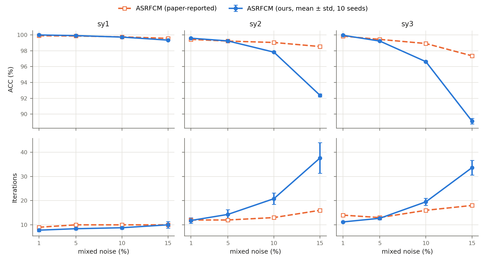
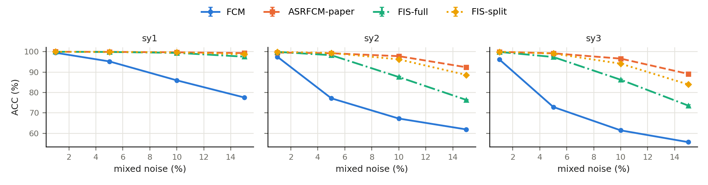
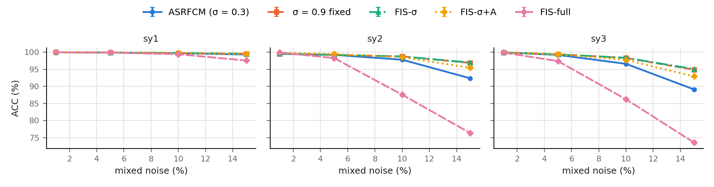

Abstract—We re-implement, from scratch, the adaptive sparse-regularized fuzzy C-means method with complementary spatial information of Wu et al. (Expert Systems with Applications, 2024) and reproduce its main experiments on three synthetic images and eight BSDS500 images. Our FCM baseline matches the paper-reported FCM results within 0.63 accuracy points on average, and the reproduced method matches the paper within 0.11 points up to 5 % mixed noise, while it is up to 8.2 points lower at 15 % noise. In the process we document six ambiguities and inconsistencies of the paper, among them that its Kappa values are a fixed rescaling of accuracy and that, with the published parameters, its non-local means step behaves like a mean filter. As an extension we replace the paper's closed-form per-pixel trust coefficients by an explicit Mamdani fuzzy inference system with nine IF–THEN rules, and compare membership-function shapes, defuzzification methods and a Sugeno variant. The pre-registered rule base did not improve the method: it was significantly worse at high noise (15.5–16.0 accuracy points on sy2/sy3 at 15 %), and an exploratory variant gave only small gains at low noise. Guided by the analysis of this failure, a second, pre-registered iteration with a separate tuning set adds a three-rule Mamdani system that sets the reward factor σ of the local term from an image-level noise estimate. It raises the accuracy by +0.92 and +3.59 points at 10 and 15 % noise (p < 0.001) without loss at low noise, and narrows the gap to the paper-reported values at 15 % noise from 6.15/8.23 to 1.53/2.28 points (sy2/sy3) without closing it; a control with a fixed σ = 0.9 shows that the gain comes from adapting σ rather than from the rule base itself. Combined with a bounded trust in the noisy pixel, the first rule base is no longer worse than the paper's formula anywhere.
Index Terms—fuzzy C-means, image segmentation, fuzzy inference system, reproducibility, dual-tree complex wavelet transform, sparse regularization.
I. Introduction
Segmentation divides an image into homogeneous regions and is a basic step of many vision pipelines. Fuzzy C-means (FCM) [2] is popular for this task because it assigns each pixel a degree of membership in every cluster instead of a hard label, but it treats pixels as independent points in gray-level space and is therefore very sensitive to noise [1]. A long line of work adds spatial information to FCM [8]–[23]. The reference paper of this project, Wu et al. [1], combines four ideas: (i) a local estimate ξ in which neighbours are split by gray-level rank into a golden-ratio reward set and a penalty set, (ii) a non-local estimate ϑ obtained by non-local means in the dual-tree complex wavelet (DTCWT) domain, (iii) per-pixel coefficients α, β, γ that weigh the original value against the two estimates, and (iv) an ℓ0 sparse regularization of the membership matrix solved by hard thresholding. The paper reports large gains over FCM and eight other methods.
This project follows the course guideline: examine the paper, re-implement it, reproduce at least one of its experiments, extend it, and evaluate the extension against the baseline in controlled experiments. Our contributions are:
- an independent open-source implementation of FCM and of the complete method with unit tests, re-created test data (synthetic images and BSDS500 ground truths extracted from the paper's figures) and a validated reading of the under-specified mixed-noise model;
- a reproduction of Tables 1–9 of [1] with 10 seeds per setting and an analysis of the differences, including six documented ambiguities or inconsistencies of the paper (Section IX);
- an extension that replaces the closed-form trust coefficients by an explicit Mamdani fuzzy inference system [30], with hypotheses fixed before the experiments, comparisons of membership functions, defuzzification methods and a Sugeno variant [31], robustness experiments for four noise types, and an honest negative result;
- a second, pre-registered iteration that targets the diagnosed causes of that result (a fuzzy rule for the reward factor σ, a bounded trust in the noisy pixel and an impulse input), tuned on separate noise realizations and tested once.
II. Related Work
Local spatial information. BCFCM [8] first added a neighbourhood term to the FCM objective; FCM_S1/S2 [9] replaced it with pre-filtered images and a kernel distance; FGFCM [10] combined spatial and gray-level similarity and clustered the gray-level histogram. FLICM [11] introduced a parameter-free fuzzy factor and led to KWFLICM [13] and ADFLICM [14]. FRFCM [15] uses morphological reconstruction [6] and membership filtering, DSFCM_N [16] models noise as a sparse deviation, and FCM_SICM [18] uses bilateral filtering and membership linking. As noted in [1], these operators essentially average the neighbourhood, which is biased when many neighbours are corrupted.
Non-local and region-level information. Following non-local means [5], FCM_SNLS [12] gathers information from pixels with similar patches. FALRCM [20] adds region-level information with median memberships, and FSC_LNML [22] combines fuzzy subspace clustering with adaptive local variance, non-local information and membership linking. Jiao et al. [24] build a weighted image from regional and local filtering and adapt, per pixel, its balance with the original image.
Transform domain and sparsity. WFCM [17] clusters in a wavelet-frame domain; SRFCM [19] adds morphological reconstruction and a sparse regularization of the memberships, solved by a Lagrangian step, thresholding and normalization — the scheme that [1] adopts. Chen et al. [25] use sparse self-representation within fuzzy clustering.
Other directions. Recent work changes the fuzzy partition itself [27], combines fuzzy clustering with deep networks [26], or estimates K automatically [28]. Among these methods, [1] is the only one that combines local, non-local, wavelet-domain, sparse and per-pixel adaptive components; its closest relatives are SRFCM [19] and FSC_LNML [22]. None of them expresses the per-pixel weighting as an explicit fuzzy rule base, which is the gap our extension addresses.
III. Theoretical Background
A. Fuzzy sets and fuzzy inference
A fuzzy set A on a universe X is defined by a membership function μA: X → [0,1] [29]. A Mamdani system [30] maps crisp inputs to crisp outputs in four steps: fuzzification (membership degrees of each input in its linguistic terms), rule evaluation (the firing strength of a rule “IF x1 is A AND x2 is B THEN z is C” is min(μA(x1), μB(x2))), implication and aggregation (each consequent set is clipped at its firing strength and the clipped sets are combined with max), and defuzzification of the aggregated set μ(z): the centroid ∫zμ(z)dz/∫μ(z)dz, the bisector of the area, or the mean of the maxima. In a zero-order Takagi–Sugeno system [31] the consequents are constants cr and the output is Σwrcr/Σwr.
B. Fuzzy C-means
FCM [2] partitions N gray values yj into K fuzzy clusters with centres ci by minimizing
with fuzzifier m > 1. Alternating optimization gives uij = 1/Σr(|yj−ci|/|yj−cr|)2/(m−1) and ci = Σjuijmyj/Σjuijm; each step cannot increase J. Each cluster is a fuzzy set over the pixels, and the crisp segmentation is obtained by defuzzification with argmaxi uij.
C. DTCWT and non-local means
The DTCWT [4] uses two real wavelet trees whose outputs form the real and imaginary parts of complex coefficients; it is nearly shift invariant and separates six orientations (±15°, ±45°, ±75°). Non-local means [5] replaces each value by a weighted mean of the values in a search window, the weights decreasing with the Gaussian-weighted distance between the surrounding patches.
IV. Original Method

Local information ξ (Alg. 2 of [1]). In a w×w window the NR−1 neighbours of pixel i are sorted; the middle ⌈0.618(NR−1)⌉ form the reward set, the others the penalty set. With Sij = exp(−(xj−xi)²/τi²), τi² = Σp(xp−xi)²/NR, the weights are SSij = (1±σ)Sij·exp(−dij) and ξi = ΣjSSijxj/ΣjSSij, where dij is the spatial distance.
Non-local information ϑ. The image is decomposed by a one-level DTCWT; non-local means with an S×S search window, w×w patches, Gaussian patch weights of standard deviation υ and filtering parameter g·w² is applied to all seven sub-images (Eqs. 10–11 of [1]); the inverse transform gives ϑ.
Adaptive coefficients. With ΔG1 = k·exp(yj−ξj) and ΔG2 = k·exp(yj−ϑj), αj = 1/(ΔG1+ΔG2), βj = ΔG1, γj = ΔG2. A pixel that differs from its estimates receives less trust in its own value.
Sparse-regularized FCM (Alg. 3 of [1]). The objective is
and each iteration computes centres ci = Σjuijm(αjyj+βjξj+γjϑj)/Σjuijm(αj+βj+γj), FCM-type memberships ηij from dij, sets ηij < √δ to zero and renormalizes the columns. Parameters: w = 5, S = 15, υ = 4, g = 10, σ = 0.3, k = 15, δ = 0.4, m = 2, ε = 10−6, T = 100.
Fuzzy-system view. Inputs are y, ξ and ϑ; each cluster is a fuzzy set whose membership function is uij; the role of an inference mechanism is played by the minimization of (2) (“a pixel close to ci in the weighted distance belongs strongly to cluster i”); defuzzification is argmax. The method contains no explicit rule base — the motivation for our extension.
V. Reproduction Methodology
Implementation. Everything is written in Python 3.12 (NumPy, SciPy, OpenCV, dtcwt) without code from the authors. Each module is unit-tested (97 tests): for example, the vectorized non-local means equals a direct transcription of Eqs. 10–11, the reward/penalty sets of the worked example in Fig. 1 of [1] are reproduced exactly, and the sparse method reduces exactly to FCM when the extra terms are switched off. FCM and the proposed method share the same random initial memberships for a given seed.
Data. The synthetic images are not published, so we extracted the raster of Fig. 9 of [1], resized each panel to 256×256 and assigned every pixel to the nearest of the measured gray levels (sy1: 0/255, K = 2; sy2: 0/107/255, K = 3; sy3: 0/107/222, K = 3). For BSDS500 [7] the paper evaluates against simplified 2–4 class ground truths shown in its Fig. 22; we re-created them the same way and validated them against the human segmentations (93.5–99.7 % agreement after merging regions). Color images are converted to gray with BT.601 weights.
Noise. [1] describes “equal proportions of Gaussian, salt-and-pepper and multiplicative noise” without a definition of the level. We read p % mixed noise as Gaussian noise of variance p, then speckle (multiplicative uniform noise of variance p), then salt-and-pepper of density p. With this reading our FCM reproduces the paper-reported FCM within 0.63 ACC points on average (Section VIII-A), which supports it.
Metrics. VPC, VPE (from U), ACC, F-score (macro average), NMI and Kappa (from the label map). Clusters are matched to classes with the Hungarian algorithm. We report Cohen's kappa; for comparison with the paper we also compute the rescaled ACC that its Kappa values correspond to (Section IX).
Interpretation choices. Table I lists the decisions that affect the results; all are recorded with their evidence in report/decisions.md.
| Ambiguity | Our choice |
|---|---|
| Synthetic images | sy1–sy3 extracted from Fig. 9 of [1], 256×256 |
| BSDS500 ground truth | 2–4 class maps of Fig. 22 of [1], extracted; K = 2,3,3,3,4,2,2,2 |
| Mixed noise p % | Gaussian (var. p) → speckle (var. p) → salt-and-pepper (density p) |
| Reward-set size | ⌊0.618(NR−1)⌋ as in Fig. 1 of [1] (text: ⌈·⌉, ablation) |
| Eq. 10 | yq instead of the printed yj |
| NLM intensities | [0,1] (Alg. 3 step 1), h² = g·w², normalized patch kernel |
| Complex sub-bands | weights from magnitudes, applied to real and imaginary parts |
| Eqs. 15–16 | signed exp(y−ξ) as printed; |y−ξ| in the ablation |
| Empty column after threshold | keep η of that pixel (reproduces the reported VPC) |
| Label matching | Hungarian; F-score macro-averaged; Cohen's kappa |
VI. Proposed Extension: Mamdani Rule Bases for the Method's Weights
A. First iteration: a rule base for the trust coefficients
Motivation. With k = 15 and gray values in [0,1], ΔG lies in [5.5, 40.8]; hence α ≈ 0.01–0.1 and β ≈ γ for almost every pixel, and the two estimates are always weighted alike. Our reproduction shows that they fail in different places: with the published parameters the non-local step acts almost as a 15×15 mean filter on each sub-band (strong in flat regions, blurring at edges), while ξ is edge-aware but weaker under heavy noise. A rule base can express such knowledge explicitly, is inspectable, and connects the method to fuzzy inference.
Design (fixed before the experiments). Two inputs per pixel: Dev = |y − (ξ+ϑ)/2| (deviation from the consensus; large ⇒ probably noise) and Dis = |ξ − ϑ| (disagreement of the estimates; large ⇒ probably an edge). Terms Small/Medium/Large on [0,1] (triangular/trapezoidal; Gaussian variant with the same crossover points); outputs α, β, γ with terms Low/Medium/High (Fig. 2). The nine rules are given in Table II; inference uses min/min/max and centroid defuzzification, and the outputs are normalized to α+β+γ = 1 per pixel. A zero-order Sugeno version uses the same rules with the output-term centroids as constants. The FIS is evaluated once per image.
| Rule | Dev | Dis | α | β | γ |
|---|---|---|---|---|---|
| R1 | Small | Small | High | Medium | Medium |
| R2 | Small | Medium | High | Medium | Low |
| R3 | Small | Large | High | Medium | Low |
| R4 | Medium | Small | Medium | Medium | High |
| R5 | Medium | Medium | Medium | High | Medium |
| R6 | Medium | Large | Medium | High | Low |
| R7 | Large | Small | Low | High | High |
| R8 | Large | Medium | Low | High | Medium |
| R9 | Large | Large | Low | High | Low |

Hypotheses (CP4, committed before the runs). H1: the FIS raises ACC at 10–15 % noise on sy2/sy3 and loses at most 0.5 points at 1–5 %. H2: it also raises the mean ACC on the BSDS500 images. H3: membership shape and defuzzification change ACC by less than one point. H4: Sugeno is within one point of Mamdani-centroid. Exploratory variant. After the first runs showed that the pre-registered FIS (“full”) gives the noisy pixel about 30 % of the total trust (paper: about 0.1 %), we added exactly one post-hoc variant, “split”, which keeps the paper's α and total trust β+γ and uses the FIS only to divide that trust between ξ and ϑ. No other variant was tuned on the results.
B. Second iteration: a fuzzy reward factor (pre-registered)
Diagnosis. The first iteration failed for two measured reasons (Section IX): the rule base leaves the noisy pixel about 30 % of the trust, and its inputs cannot separate edges from noise once ξ is noisy. The single-factor ablation (Section VIII-E) further shows that the reward factor σ of the local term dominates the high-noise behaviour: σ = 0.3 suffices at low noise, a larger σ is much better at high noise. A fixed number cannot suit every image, which is a natural task for a rule base: the noisier the image, the more strongly the outliers of each window should be penalized.
Candidates. (A) the first rule base with its α output range shrunk to the range the paper's formula produces (factor 0.002, the median ratio between the two α shares); (B) a third input Imp = |y − median3×3(y)| with the rules “IF Imp is Large AND Dis is … THEN α is Low”; (C) a Mamdani system with one input, the image-level noise estimate median(|HH|)/0.6745 of the finest diagonal Haar coefficients (a robust estimate of the noise standard deviation: flat regions give HH = 0, and for Gaussian noise median|n| = 0.6745σn), terms Low/Medium/High, one output σ with terms Small/Medium/Large and the three rules Low→Small, Medium→Medium, High→Large (Fig. 3), at image or pixel level; and combinations.
Protocol (CP6, committed before each step). Candidates were tuned only on seeds 100–104 (noise realizations used nowhere else) with a budget of 12 configurations, all logged; the variant with the highest mean tuning ACC was selected by a rule fixed in advance; the selected variant and hypotheses were committed before the single run on the test seeds 0–9. Because the ideas for B and C came from observations on the test seeds, the test is blind to their parameters but not to their idea. 9 configurations were used: A and A+B reached only the level of the split variant (96.70 vs 97.74 % for the paper's coefficients), B alone 93.98, the C variants 98.84–98.85 and, with the largest output term at 0.95, 98.88 % — the selected variant FIS-σ. A fixed σ = 0.9 reached 98.85 %. The combination C+A (98.56 %) was never below the paper's coefficients on the tuning set and was declared as a secondary variant, FIS-σ+A.

Hypotheses (D-045). H5: FIS-σ has a higher mean ACC than the paper's settings at 10 and 15 % noise (paired Wilcoxon over the 30 image–seed pairs, p < 0.05) and is nowhere more than 0.5 point lower at 1 and 5 %. H5-control (expected null): FIS-σ and a fixed σ = 0.9 differ by less than 0.5 point on every mixed-noise setting; an advantage of the rule over the fixed value can only appear for other noise types, low noise or natural images. H6: FIS-σ+A is nowhere below the paper's settings.
VII. Experimental Setup
Synthetic images: mixed noise of 1, 5, 10 and 15 %; BSDS500: 5 %; robustness: Gaussian, speckle, salt-and-pepper and mixed noise at 0–20 %. Every setting is run with 10 seeds; a seed fixes the noise realization and the initial memberships, which are shared by all methods. We report mean ± standard deviation and paired two-sided Wilcoxon signed-rank tests over the seeds (α = 0.05). E1–E3 reproduce Tables 2–8 (FCM and proposed method) and the ablation of Table 1; E4 repeats the parameter study of Figs. 10–13; E5 evaluates the extension (main comparison, FIS variants, robustness per noise type, single-factor ablation of the paper's arbitrary choices); E6 uses the eight BSDS500 images; E7 measures run time on an otherwise idle laptop CPU (Windows 11, AMD64 CPU, one core, Python 3.12.0); E8 is the second iteration (tuning seeds 100–104, test seeds 0–9 on the synthetic grid, on the four noise types at 0–20 % and on BSDS500 in gray and colour, with a fixed σ = 0.9 as an additional control). All tables and figures are generated by scripts from the per-run CSV files.
VIII. Results
A. Reproduction of FCM (E1)
Our FCM reproduces the paper-reported FCM column of Tables 2–8 closely: the mean absolute difference over the 12 image/noise settings is 0.63 ACC points (maximum 1.85), 1.37 NMI points, 0.47 VPC points and 0.85 VPE points; our FCM needs on average 4.6 fewer iterations (Table III, Fig. 4). Since FCM has no parameter apart from m, ε and T, this agreement mainly validates the re-created images and our reading of the noise model.
B. Reproduction of the proposed method (E2)
Up to 5 % noise our implementation of the method reproduces the paper within 0.11 ACC points on average and improves FCM by up to 35.2 points. At 10–15 % on the three-class images it is lower than reported (mean gap 3.02 points, largest 8.2), needs more iterations, and its NMI drops faster (Table III, Fig. 4). The single-factor ablation of Section VIII-E locates the cause: with the reward factor σ = 0.9 — the value implied by the paper's own worked examples (Section IX) — the high-noise gap shrinks substantially.
| Image | Noise % | FCM ours | FCM paper | ASRFCM ours | ASRFCM paper |
|---|---|---|---|---|---|
| sy1 | 1 | 99.50 | 99.49 | 99.99 | 99.89 |
| sy1 | 5 | 95.24 | 95.20 | 99.91 | 99.86 |
| sy1 | 10 | 85.95 | 86.18 | 99.72 | 99.75 |
| sy1 | 15 | 77.56 | 77.97 | 99.34 | 99.56 |
| sy2 | 1 | 97.52 | 97.82 | 99.58 | 99.43 |
| sy2 | 5 | 77.14 | 77.16 | 99.24 | 99.22 |
| sy2 | 10 | 67.22 | 67.75 | 97.82 | 99.04 |
| sy2 | 15 | 61.89 | 62.68 | 92.38 | 98.53 |
| sy3 | 1 | 96.22 | 95.87 | 99.95 | 99.84 |
| sy3 | 5 | 72.90 | 74.75 | 99.22 | 99.43 |
| sy3 | 10 | 61.42 | 62.61 | 96.62 | 98.91 |
| sy3 | 15 | 55.66 | 57.45 | 89.13 | 97.36 |

e2_asrfcm_vs_paper.png, e1_fcm_vs_paper.png).C. Ablation (E3)
Table IV repeats Table 1 of [1] (5 % noise). As in the paper, the non-local term is the most effective single component (ACC 97.5–99.6 % alone), all three components together are best or tied-best (ACC 99.91 / 99.24 / 99.22 % on sy1/sy2/sy3; paper 99.52 %), and the sparse step raises VPC to about 99 % and lowers the iterations in most configurations. Unlike the paper, the local term alone is already strong in our runs (ACC 97.5–99.9 % vs 82.26 % reported). The paper's row without any component, which is plain FCM, does not agree with its own FCM results in Tables 2–8 (Section IX).
| Components | ACC ours | ACC paper | V_PC ours | V_PC paper | Iter. ours | Iter. paper |
|---|---|---|---|---|---|---|
| none (FCM) | 72.90 | 75.10 | 83.85 | 70.58 | 36.5 | 20 |
| S | 72.90 | 82.48 | 94.62 | 94.74 | 35.4 | 24 |
| NL | 98.77 | 99.47 | 92.25 | 95.83 | 15.5 | 13 |
| NL+S | 98.75 | 99.42 | 97.81 | 99.24 | 15.8 | 13 |
| L | 97.48 | 82.26 | 88.79 | 87.51 | 21.4 | 17 |
| L+S | 97.47 | 78.49 | 97.66 | 94.99 | 16.8 | 19 |
| L+NL | 99.22 | 99.50 | 89.31 | 96.08 | 15.9 | 12 |
| L+NL+S | 99.22 | 99.52 | 99.19 | 99.26 | 12.7 | 11 |
D. Parameter sensitivity (E4)
At 5 % noise the method is insensitive to σ, w and δ (Fig. 5): over σ ∈ [0.05, 0.9], w ∈ {3, 5, 7, 9} and δ ∈ [0, 0.8] the ACC of each image varies by at most 0.35, 0.17 and 0.02 points. Unlike Fig. 10 of [1], the ACC does not decrease above σ = 0.4; on sy3 it increases slightly up to σ = 0.9 (99.22 → 99.39 %), consistent with Section VIII-E. For k ≥ 5 the ACC is stable (range 0.03 points), while k = 1 degrades it (sy3: 95.94 %), in line with the paper's statement that k should exceed 5. The sparsity factor mainly controls convergence: on sy3 the iterations fall from 15.9 without sparsity (δ = 0) to a minimum of 11.1 at δ = 0.2 and rise again for larger δ (12.7 at the paper's δ = 0.4).

E. Single-factor ablation of the paper's choices (E5, C2)
Table V changes one choice at a time. The reward factor has the largest effect: with σ = 0.9 the ACC at 15 % noise rises from 92.38 to 96.88 % on sy2 and from 89.13 to 94.88 % on sy3; the gap to the paper-reported values shrinks from 6.1/8.2 to 1.7/2.5 points and the iterations at 15 % fall from 27.1 to 17.6. The golden ratio is not special: ρ = 0.5 gives the same or slightly higher ACC, whereas 0.7 and 0.8 are worse at high noise, and the rounding of the reward-set size hardly matters. The absolute difference in Eqs. 15–16 is better than the printed signed one at 15 % (sy3: 91.59 vs 89.13 %). Making empty columns crisp (argmax) forces VPC = 100 % and costs ACC on sy2 at 5 % (96.11 vs 99.24 %), and running the non-local means on 0–255 intensities is clearly worse at 15 % (sy3: 80.05 %).
| Variant | sy1 5% | sy1 15% | sy2 5% | sy2 15% | sy3 5% | sy3 15% | Iter. 15% |
|---|---|---|---|---|---|---|---|
| paper settings | 99.91 | 99.34 | 99.24 | 92.38 | 99.22 | 89.13 | 27.1 |
| ρ = 0.5 | 99.91 | 99.36 | 99.23 | 92.36 | 99.22 | 89.39 | 26.4 |
| ρ = 0.7 | 99.91 | 99.31 | 99.24 | 92.11 | 99.21 | 88.60 | 27.0 |
| ρ = 0.8 | 99.91 | 99.22 | 99.25 | 91.30 | 99.16 | 87.06 | 29.0 |
| ⌈·⌉ reward size | 99.91 | 99.32 | 99.24 | 92.32 | 99.21 | 88.79 | 27.3 |
| σ = 0.6 | 99.92 | 99.47 | 99.25 | 95.36 | 99.34 | 92.66 | 20.4 |
| σ = 0.9 | 99.92 | 99.54 | 99.23 | 96.88 | 99.39 | 94.88 | 17.6 |
| |y−ξ| in Eqs. 15–16 | 99.91 | 99.41 | 99.08 | 92.86 | 99.24 | 91.59 | 23.1 |
| empty column: argmax | 99.91 | 99.34 | 96.11 | 92.13 | 99.22 | 89.09 | 25.1 |
| NLM on 0–255 | 99.94 | 98.21 | 99.12 | 83.46 | 98.66 | 80.05 | 28.8 |
F. Proposed extension (E5)
Table VI and Fig. 6 compare the method with the paper's coefficients and with the two fuzzy-rule variants on identical noise realizations and initializations. H1 is rejected. The pre-registered FIS (“full”) is significantly worse than the paper's coefficients at 10 and 15 % noise on sy2 and sy3 (by 15.5–16.0 points at 15 %) and slightly worse at 5 %. The exploratory “split” variant is close to the baseline up to 5 % and gives small but significant gains in a few low-noise settings (FIS-full on sy2 at 1 % (+0.35); FIS-split on sy2 at 1 % (+0.32); FIS-split on sy2 at 5 % (+0.15)), but it still loses 3.8–5.2 points at 15 % on sy2/sy3. Table VII summarizes all synthetic settings in the format required by the course guideline.
| Image | Noise % | FCM | ASRFCM (paper coeff.) | +FIS full | +FIS split | Δ full | Δ split |
|---|---|---|---|---|---|---|---|
| sy1 | 1 | 99.50 ± 0.03 | 99.99 ± 0.00 | 99.99 ± 0.00 | 99.99 ± 0.00 | +0.00 | +0.00 |
| sy1 | 5 | 95.24 ± 0.09 | 99.91 ± 0.02 | 99.88 ± 0.02 | 99.91 ± 0.02 | -0.03* | +0.00 |
| sy1 | 10 | 85.95 ± 0.17 | 99.72 ± 0.03 | 99.43 ± 0.03 | 99.66 ± 0.03 | -0.28* | -0.05* |
| sy1 | 15 | 77.56 ± 0.17 | 99.34 ± 0.04 | 97.57 ± 0.11 | 98.76 ± 0.07 | -1.77* | -0.58* |
| sy2 | 1 | 97.52 ± 0.06 | 99.58 ± 0.02 | 99.92 ± 0.01 | 99.90 ± 0.01 | +0.35* | +0.32* |
| sy2 | 5 | 77.14 ± 0.21 | 99.24 ± 0.04 | 98.29 ± 0.06 | 99.38 ± 0.04 | -0.95* | +0.15* |
| sy2 | 10 | 67.22 ± 0.22 | 97.82 ± 0.09 | 87.59 ± 0.37 | 96.25 ± 0.10 | -10.23* | -1.57* |
| sy2 | 15 | 61.89 ± 0.18 | 92.38 ± 0.19 | 76.37 ± 0.25 | 88.63 ± 0.23 | -16.01* | -3.75* |
| sy3 | 1 | 96.22 ± 0.06 | 99.95 ± 0.01 | 99.90 ± 0.01 | 99.96 ± 0.01 | -0.05* | +0.00 |
| sy3 | 5 | 72.90 ± 0.17 | 99.22 ± 0.04 | 97.41 ± 0.05 | 99.11 ± 0.05 | -1.81* | -0.11* |
| sy3 | 10 | 61.42 ± 0.23 | 96.62 ± 0.12 | 86.24 ± 0.34 | 94.13 ± 0.17 | -10.37* | -2.48* |
| sy3 | 15 | 55.66 ± 0.21 | 89.13 ± 0.35 | 73.59 ± 0.45 | 83.94 ± 0.39 | -15.54* | -5.19* |
| Metric | Baseline (ASRFCM-paper) | Improved (FIS-full) | Change (FIS-full) | Improved (FIS-split) | Change (FIS-split) |
|---|---|---|---|---|---|
| ACC | 97.74 ± 3.33 | 93.02 ± 9.27 | -4.73 | 96.64 ± 5.02 | -1.11 |
| F | 97.40 ± 3.76 | 92.05 ± 10.55 | -5.35 | 96.00 ± 5.94 | -1.40 |
| NMI | 90.32 ± 11.35 | 79.45 ± 22.06 | -10.87 | 87.29 ± 15.29 | -3.03 |
| Kappa (Cohen) | 95.98 ± 5.72 | 87.95 ± 15.69 | -8.03 | 94.05 ± 8.61 | -1.93 |
| Kappa (paper's definition) | 94.94 ± 7.51 | 84.35 ± 20.88 | -10.59 | 92.46 ± 11.32 | -2.48 |
| V_PC | 97.75 ± 3.06 | 94.85 ± 5.55 | -2.90 | 97.83 ± 2.77 | +0.08 |
| V_PE | 3.61 ± 4.96 | 8.30 ± 9.05 | +4.69 | 3.46 ± 4.46 | -0.15 |
| Iterations | 16.38 ± 9.76 | 22.13 ± 15.73 | +5.76 | 17.51 ± 11.29 | +1.13 |
| Time per 256x256 image (s, E7) | 0.79 | 2.08 | +1.30 | 2.10 | +1.31 |

FIS variants (H3, H4). Replacing triangular by Gaussian sets, centroid by bisector, or Mamdani by zero-order Sugeno changes the ACC by at most 0.54 points for “full” and 0.43 points for “split” (Table VIII), so H3 holds for these choices, and Sugeno stays within 0.43 points of Mamdani-centroid (H4 holds). Mean of maxima is the exception: its coarser outputs reduce the trust contrast and partly compensate the over-trust in the noisy pixel of “full” (+2.94 points at 15 %). Normalizing α+β+γ has no effect on ACC, as expected: the memberships of a pixel depend only on ratios of its own distances.
| Variant | sy2 5% | sy2 15% | sy3 5% | sy3 15% |
|---|---|---|---|---|
| ASRFCM-paper | 99.24 | 92.38 | 99.22 | 89.13 |
| full tri centroid | 98.29 | 76.37 | 97.41 | 73.59 |
| full gauss centroid | 98.25 | 76.38 | 97.35 | 73.40 |
| full tri bisector | 98.36 | 76.68 | 97.53 | 74.13 |
| full tri mom | 98.63 | 79.10 | 97.90 | 76.53 |
| full tri sugeno | 98.43 | 76.50 | 97.57 | 73.96 |
| full unnormalised | 98.29 | 76.37 | 97.41 | 73.57 |
| split tri centroid | 99.38 | 88.63 | 99.11 | 83.94 |
| split gauss centroid | 99.38 | 88.74 | 99.12 | 84.08 |
| split tri bisector | 99.39 | 88.61 | 99.12 | 83.85 |
| split tri mom | 99.37 | 88.17 | 99.09 | 82.87 |
| split tri sugeno | 99.39 | 88.38 | 99.10 | 83.51 |
G. Robustness to the noise type (E5, C1)
Fig. 7 separates the components of the mixed noise (values: mean over sy1–sy3, FCM → reproduced method at 20 %). Salt-and-pepper (88.3 → 99.3 %) and speckle noise (88.1 → 99.4 %) are almost completely removed: impulses sit at the ends of the sorted neighbourhood and fall into the penalty set, and speckle leaves dark regions untouched. Gaussian noise is harder (70.1 → 97.3 %), and the combination is clearly the hardest case (60.8 → 86.9 %): the method copes well with each component alone but not with their sum at the same parameter. On noise-free images the method is slightly below FCM (99.9 vs 100.0 %) because the spatial terms smooth thin structures; the pre-registered FIS, which trusts consistent pixels, keeps 100.0 % there and is also better at 1 % noise (e.g. Gaussian: 100.0 vs 99.9 %). This is the regime the rule base was designed for; with more noise its trust in the pixel becomes a liability (Gaussian 20 %: 88.1 %). The split variant is equal to or slightly better than the paper's coefficients for impulse and speckle noise up to 10 % (salt-and-pepper 10 %: 99.8 vs 99.8 %) and falls behind for Gaussian and mixed noise at high density.

H. Real images (E6)
On the eight BSDS500 images (gray-level protocol, Table IX) the reproduced method raises the mean ACC of FCM from 57.87 to 79.85 % (paper-reported: 69.28 → 87.36 %). Our FCM is lower than the paper's because the paper clustered the color images (Section IX). H2 is rejected: the fuzzy-rule variants do not raise the mean ACC (full 72.04 %, split 78.70 %). For the colour re-run we use the minimal multichannel generalization of D-043 (ξ and ϑ per channel, Euclidean distances in RGB, one α, β, γ per pixel from channel-averaged differences; noise added to each channel). On the colour images, our FCM matches the paper-reported FCM within two points on 7 of 8 images (mean 68.38 vs 69.28 %), and the reproduced method reaches 85.29 % (paper-reported 87.36 %); the FIS variants give 82.25 (full) and 84.84 % (split).
| Image | K | FCM | ASRFCM | +FIS full | +FIS split | FCM (RGB) | ASRFCM (RGB) | +FIS full (RGB) | +FIS split (RGB) | FCM paper | ASRFCM paper |
|---|---|---|---|---|---|---|---|---|---|---|---|
| 100007 | 2 | 57.82 | 79.86 | 77.98 | 79.71 | 65.92 | 80.69 | 81.11 | 80.88 | 65.96 | 80.83 |
| 118035 | 3 | 54.77 | 84.70 | 72.30 | 83.24 | 72.09 | 93.92 | 92.56 | 93.72 | 73.08 | 96.24 |
| 167062 | 3 | 77.14 | 98.02 | 80.07 | 93.61 | 79.18 | 95.09 | 75.61 | 92.34 | 78.86 | 98.87 |
| 201080 | 3 | 42.27 | 54.06 | 49.18 | 54.49 | 62.07 | 83.74 | 82.85 | 83.65 | 62.72 | 85.12 |
| 241004 | 4 | 44.80 | 72.82 | 63.96 | 72.12 | 59.82 | 73.32 | 76.67 | 73.43 | 60.36 | 73.16 |
| 42049 | 2 | 67.96 | 90.49 | 89.18 | 90.27 | 77.71 | 91.62 | 91.25 | 91.58 | 81.67 | 96.36 |
| 67079 | 2 | 60.52 | 80.81 | 76.15 | 79.83 | 68.02 | 82.94 | 80.78 | 82.59 | 68.67 | 85.06 |
| 86016 | 2 | 57.64 | 78.06 | 67.51 | 76.34 | 62.21 | 80.99 | 77.14 | 80.54 | 62.89 | 83.26 |
| mean | 57.87 | 79.85 | 72.04 | 78.70 | 68.38 | 85.29 | 82.25 | 84.84 | 69.28 | 87.36 |

I. Second iteration (E8)
Table X and Fig. 9 give the single test run. H5 holds. Over the 30 image–seed pairs FIS-σ raises the mean ACC by +0.92 points at 10 % and by +3.59 points at 15 % (both p < 0.001); at 15 % on sy2/sy3 it reaches 97.00/95.08 % instead of 92.38/89.13 % (paper-reported: 98.53/97.36 %; see below), and at 1 and 5 % its largest loss is -0.01 points. The rule selects σ ≈ 0.38, 0.66, 0.92 and 0.94 at 1, 5, 10 and 15 % noise. H5-control holds: FIS-σ and a fixed σ = 0.9 differ by -0.02 … +0.19 points on the twelve settings, so on this grid the gain comes from using a larger σ, which the rule selects automatically, not from the fuzzy inference as such. H6 holds: FIS-σ+A is nowhere below the paper's settings (worst difference +0.00) and, unlike FIS-σ, it is significantly better at low noise (+0.11 and +0.13 points at 1 and 5 %; sy2 at 1 %: 99.89 vs 99.57 %), where a consistent pixel keeps more of its own value; at 15 % it gains less than FIS-σ (+2.34 vs +3.59). Table XI gives the summary in the guideline format.
| Image | Noise % | Reported [1] | ASRFCM (σ = 0.3) | σ = 0.9 fixed | FIS-σ (Δ) | FIS-σ+A (Δ) |
|---|---|---|---|---|---|---|
| sy1 | 1 | 99.89 | 99.99 ± 0.00 | 99.99 ± 0.00 | 99.99 (+0.00) | 99.99 (+0.00) |
| sy1 | 5 | 99.86 | 99.91 ± 0.02 | 99.92 ± 0.01 | 99.92 (+0.01*) | 99.92 (+0.01*) |
| sy1 | 10 | 99.75 | 99.72 ± 0.03 | 99.77 ± 0.02 | 99.77 (+0.06*) | 99.77 (+0.05*) |
| sy1 | 15 | 99.56 | 99.34 ± 0.04 | 99.54 ± 0.03 | 99.55 (+0.21*) | 99.48 (+0.13*) |
| sy2 | 1 | 99.43 | 99.58 ± 0.02 | 99.51 ± 0.01 | 99.57 (-0.01*) | 99.89 (+0.31*) |
| sy2 | 5 | 99.22 | 99.24 ± 0.04 | 99.23 ± 0.03 | 99.25 (+0.01) | 99.47 (+0.23*) |
| sy2 | 10 | 99.04 | 97.82 ± 0.09 | 98.77 ± 0.06 | 98.77 (+0.95*) | 98.54 (+0.71*) |
| sy2 | 15 | 98.53 | 92.38 ± 0.19 | 96.88 ± 0.07 | 97.00 (+4.61*) | 95.47 (+3.08*) |
| sy3 | 1 | 99.84 | 99.95 ± 0.01 | 99.96 ± 0.01 | 99.96 (+0.00*) | 99.96 (+0.00*) |
| sy3 | 5 | 99.43 | 99.22 ± 0.04 | 99.39 ± 0.05 | 99.37 (+0.15*) | 99.37 (+0.15*) |
| sy3 | 10 | 98.91 | 96.62 ± 0.12 | 98.34 ± 0.08 | 98.38 (+1.76*) | 97.76 (+1.14*) |
| sy3 | 15 | 97.36 | 89.13 ± 0.35 | 94.88 ± 0.18 | 95.08 (+5.95*) | 92.94 (+3.81*) |

Comparison with the values reported in [1]. Table X also lists the values printed in [1]. They come from another implementation and other noise realizations, so this comparison is indicative only; the controlled comparison is the one with our implementation of the method above. At 1 and 5 % noise FIS-σ differs from the reported values by -0.06 to +0.14 points (equal or higher in 5/6 settings, which we read as agreement, not as an improvement over [1]). At 10 and 15 % it is still below them on the three-class images: 0.27/0.53 points at 10 % and 1.53/2.28 points at 15 % on sy2/sy3, compared with 6.15/8.23 points with the paper's settings, so about 73 % of the gap at 15 % is closed, but not all of it; on sy1 it matches the reported value (-0.01). On the colour BSDS500 images FIS-σ (85.43 %) also stays below the reported 87.36 %. In short, the second iteration improves the method under identical conditions, but it does not exceed the results reported in [1].
Beyond the test grid. On the eight BSDS500 images FIS-σ raises the mean ACC from 79.85 to 80.98 % on gray images (fixed σ = 0.9: 80.98 %) and from 85.29 to 85.43 % on colour images (fixed σ = 0.9: 85.54 %); FIS-σ+A gives 80.51 and 85.39 %. On colour images the rule selects only σ ≈ 0.56 (gray: 0.87), because the estimate is computed on the channel mean, in which the independent noise of the three channels partly cancels. Over the four noise types at 0–20 % (repository figure e8_robustness_acc.png) FIS-σ is never more than 0.05 point below the paper's settings and up to +6.59 points better (mixed 20 %); compared with a fixed σ = 0.9 it differs by -0.31 to +0.24 points, the largest loss being at salt-and-pepper 20 %, where the median-based estimate does not detect the sparse impulses (Section IX). FIS-σ+A differs from the paper's settings by -0.37 to +4.33 points (largest loss: salt-and-pepper 20 %).
| Metric | Baseline (ASRFCM-paper) | Improved (FIS-σ) | Change (FIS-σ) | Improved (FIS-σ+A) | Change (FIS-σ+A) |
|---|---|---|---|---|---|
| ACC | 97.74 ± 3.33 | 98.88 ± 1.41 | +1.14 | 98.55 ± 2.11 | +0.80 |
| F | 97.40 ± 3.76 | 98.67 ± 1.62 | +1.27 | 98.23 ± 2.54 | +0.83 |
| NMI | 90.32 ± 11.35 | 94.04 ± 5.90 | +3.72 | 92.97 ± 8.16 | +2.64 |
| Kappa (Cohen) | 95.98 ± 5.72 | 97.99 ± 2.39 | +2.01 | 97.41 ± 3.60 | +1.43 |
| Kappa (paper's definition) | 94.94 ± 7.51 | 97.50 ± 3.18 | +2.56 | 96.75 ± 4.75 | +1.81 |
| V_PC | 97.75 ± 3.06 | 98.81 ± 1.50 | +1.05 | 98.80 ± 1.56 | +1.05 |
| V_PE | 3.61 ± 4.96 | 1.91 ± 2.42 | -1.70 | 1.91 ± 2.51 | -1.71 |
| Iterations | 16.38 ± 9.76 | 13.28 ± 4.84 | -3.10 | 12.89 ± 4.82 | -3.48 |
| Time per 256x256 image (s, E7) | 0.79 | 0.93 | +0.15 | 1.95 | +1.17 |
J. Run time (E7)
On a 256×256 image FCM takes 0.12 s and the reproduced method 0.79 s, of which 0.65 s are spent on ξ and ϑ (Table XII); the sparse clustering itself is fast because it converges in few iterations. The Mamdani FIS for α, β, γ adds 1.22 s (nine rules evaluated on a 201-point output grid for every pixel); the zero-order Sugeno variant avoids this grid. The fuzzy σ rule is evaluated once per image (three rules and one median); the measured pre-processing differences, +0.14 s on the 256×256 image and +0.00 s on the BSDS500 image, are within the run-to-run variation of computing ξ.
| Image | Method | Pre-proc. (s) | Clustering (s) | Total (s) | Iter. |
|---|---|---|---|---|---|
| sy3 256×256 | FCM | 0.00 | 0.12 | 0.12 | 40 |
| sy3 256×256 | ASRFCM | 0.65 | 0.13 | 0.79 | 14 |
| sy3 256×256 | FIS-full | 1.87 | 0.21 | 2.08 | 19 |
| sy3 256×256 | FIS-split | 1.93 | 0.17 | 2.10 | 15 |
| sy3 256×256 | FIS-σ | 0.79 | 0.15 | 0.94 | 14 |
| sy3 256×256 | FIS-σ+A | 1.83 | 0.12 | 1.95 | 12 |
| BSDS 321×481 | FCM | 0.00 | 0.16 | 0.16 | 30 |
| BSDS 321×481 | ASRFCM | 2.16 | 0.32 | 2.48 | 18 |
| BSDS 321×481 | FIS-full | 4.81 | 0.42 | 5.23 | 23 |
| BSDS 321×481 | FIS-split | 4.69 | 0.34 | 5.03 | 19 |
| BSDS 321×481 | FIS-σ | 2.16 | 0.35 | 2.51 | 17 |
| BSDS 321×481 | FIS-σ+A | 4.73 | 0.31 | 5.05 | 18 |
IX. Discussion
What the reproduction shows. The core claims of [1] hold in our implementation: complementary local and non-local information makes FCM robust to mixed noise, the non-local term contributes most, and the sparse step yields near-crisp memberships with fewer iterations. The remaining gap at high noise is not caused by the method's structure but by a single under-determined quantity, the reward factor σ: with the stated σ = 0.3 the local estimate is weak under heavy noise, while the σ implied by the paper's worked examples reduces the gap at 15 % from 6.1/8.2 to 1.7/2.5 points (sy2/sy3).
Ambiguities and inconsistencies found in [1]. (i) The reported Kappa is not Cohen's kappa: solving its definition for the chance agreement with the paper's own ACC/Kappa pairs gives pe = 0.5556 = (1/3)²+(2/3)² in every three-class cell of Tables 4 and 7 and in the three-class BSDS500 images, i.e. a fixed rescaling of ACC; for some two-class BSDS500 images it varies. (ii) The similarity values printed in Figs. 2–3 reproduce the stated ξ but correspond to a reward/penalty weight ratio of about 19 (σ ≈ 0.9), not to σ = 0.3, and do not follow Eq. 6. (iii) With intensities in [0,1] and h² = g·w² = 250, every non-local weight lies in [0.996, 1], so the non-local means step is effectively a 15×15 mean filter on each sub-band; its edge preservation comes from the wavelet decomposition. (iv) With δ = 0.4, √δ > 0.5, so at most one membership per pixel survives the hard threshold; the reported VPC/VPE are reproduced only if pixels where none survives keep their unthresholded memberships. (v) The “no component” row of Table 1 does not match any FCM entry of Tables 2–8. (vi) Although the method is described for gray values, the BSDS500 results of Table 9 correspond to clustering the color images: plain FCM on the noisy RGB images reproduces the reported FCM accuracies within one point on seven of eight images. The paper also leaves the noise level, the reward-set rounding (ceil in the text, floor in Fig. 1), the window size (7 in Sec. 4.1, 5 in Sec. 4.4) and the label-matching protocol unspecified; Table I lists our choices.
Why the fuzzy rule base did not help. The paper's formula assigns the noisy pixel only about 0.1 % of the total trust; the pre-registered FIS assigns about 30 % because pixels that deviate moderately from the consensus fire the “Small/Medium deviation” rules, and at 15 % noise almost half of the pixels are corrupted. Restricting the FIS to the split between ξ and ϑ removes this leak, but its “edge” input Dis = |ξ−ϑ| is confounded by noise at high densities: when ξ itself is noisy, Dis is large and the rules shift trust towards the weaker estimate. In other words, the rule base encodes correct qualitative knowledge (Fig. 2) but its inputs cannot separate edges from noise once the local estimate is unreliable. The experiments also show what does matter: the amount of trust left to the original pixel and the strength of the local estimate (σ), not the fine shape of the membership functions or the defuzzification method. Following the protocol fixed in advance, we did not tune the rule base further on the test images.
What the second iteration shows. The diagnosis was right where it could be tested. Bounding the trust in the noisy pixel removed the loss of the first rule base: alone it reached only the level of the split variant, but together with a stronger local estimate (FIS-σ+A) it is never worse than the paper's formula and is better at low noise. The impulse input did not help, because impulses are already handled by the reward/penalty sets. The largest effect came from the reward factor: a three-rule system that reads one number from the image chooses σ ≈ 0.3 for clean images and σ ≈ 0.9 for noisy ones, and thereby closes most, but not all, of the remaining reproduction gap. The honest qualification is the control: on mixed noise a fixed σ = 0.9 is as good, so the value of the rule lies in choosing σ from the image without manual tuning — the value 0.9 itself was found only by an ablation on the test images — not in a higher accuracy than the best fixed value; on noise-free images both give the same result (noise-free images: FIS-σ 99.89 %, fixed σ = 0.9 99.88 %, paper 99.89 %). Its input is also a limitation: the median-based estimate counts texture and edges as noise, so a textured natural image with 5 % noise looks like a synthetic image with 10 % noise (Fig. 3), but it does not see sparse impulses, so for pure salt-and-pepper noise the rule keeps σ = 0.3 where a fixed σ = 0.9 is slightly better (99.35 vs 99.66 % at 20 %).
Engineering value. The extension provides inspectable, editable fuzzy rule bases inside a fuzzy clustering method, with membership functions, rule firing and defuzzification that can be visualized pixel by pixel (Fig. 2 and the live demo). Taken together, the two iterations cover new input variables (Dev, Dis, Imp, a noise estimate), a new output (σ), a comparison of membership-function shapes, of defuzzification methods and of Mamdani and Sugeno inference, a rule-base change, a new scenario (colour BSDS500), a robustness analysis, a single-factor ablation and the computational cost, each evaluated against the same baseline under a protocol fixed in advance.
X. Limitations
- Test data were re-created from the paper's figures; edges and resolution differ from the originals, and our noise model is an interpretation (supported by the FCM agreement).
- The eight comparison methods of [1] were not re-implemented; only FCM and the proposed method were reproduced.
- The fuzzy rule base was designed from observations on the synthetic images and evaluated on them and on BSDS500; it was not optimized, and a different rule base or learned membership functions might behave differently.
- The second iteration was tuned on other noise realizations of the same three synthetic images, and its ideas came from observations on the test seeds; nine configurations were tried. On mixed noise its gain equals that of a fixed σ = 0.9; its image-level noise estimate confuses texture with noise and does not detect sparse impulses, and on colour images it is computed on the channel mean. At 10–15 % noise it remains below the values reported in [1] (sy2/sy3 at 15 %: 1.53/2.28 points).
- K is given in advance; color images are handled only by the multichannel generalization described in Section VIII-H.
- Run times come from a Python implementation on one laptop CPU and are not comparable to the MATLAB timings of [1].
XI. Conclusion
We re-implemented the adaptive sparse-regularized fuzzy clustering method of [1] and reproduced its main experiments with 10 seeds per setting. FCM and the method at low and moderate noise agree closely with the paper; the gap at high noise is explained by the under-determined reward factor. We documented six inconsistencies of the paper that matter for anyone re-using its numbers. Our first extension, an explicit Mamdani rule base for the per-pixel trust coefficients, makes the weighting interpretable but did not improve accuracy; the analysis showed why. A second, pre-registered iteration built on that analysis: a three-rule Mamdani system for the reward factor improves the method by +3.59 ACC points at 15 % noise and narrows the gap to the paper-reported values at 15 % from 6.15/8.23 to 1.53/2.28 points on sy2/sy3 without closing it, and with a bounded trust in the noisy pixel the first rule base is no longer harmful. A fixed σ = 0.9 performs as well on mixed noise, so the contribution of the rule is to choose σ automatically, not to exceed the best fixed value. Future work: a noise estimate that separates texture from noise, and per-pixel rules learned from data. All code, data preparation steps, results and decisions are available in the project repository.
References
- J. Wu, X. Wang, Y. Liu, and C. Fang, "Adaptive sparse regularized fuzzy clustering noise image segmentation algorithm based on complementary spatial information," Expert Syst. Appl., vol. 256, Art. no. 124943, 2024, doi: 10.1016/j.eswa.2024.124943.
- J. C. Bezdek, R. Ehrlich, and W. Full, "FCM: The fuzzy c-means clustering algorithm," Comput. Geosci., vol. 10, no. 2–3, pp. 191–203, 1984, doi: 10.1016/0098-3004(84)90020-7.
- M. P. Windham, "Cluster validity for the fuzzy c-means clustering algorithm," IEEE Trans. Pattern Anal. Mach. Intell., vol. PAMI-4, no. 4, pp. 357–363, 1982, doi: 10.1109/TPAMI.1982.4767266.
- N. Kingsbury, "Complex wavelets for shift invariant analysis and filtering of signals," Appl. Comput. Harmon. Anal., vol. 10, no. 3, pp. 234–253, 2001, doi: 10.1006/acha.2000.0343.
- A. Buades, B. Coll, and J.-M. Morel, "Nonlocal image and movie denoising," Int. J. Comput. Vis., vol. 76, no. 2, pp. 123–139, 2008, doi: 10.1007/s11263-007-0052-1.
- L. Vincent, "Morphological grayscale reconstruction in image analysis: Applications and efficient algorithms," IEEE Trans. Image Process., vol. 2, no. 2, pp. 176–201, 1993, doi: 10.1109/83.217222.
- P. Arbeláez, M. Maire, C. Fowlkes, and J. Malik, "Contour detection and hierarchical image segmentation," IEEE Trans. Pattern Anal. Mach. Intell., vol. 33, no. 5, pp. 898–916, 2011, doi: 10.1109/TPAMI.2010.161.
- M. N. Ahmed, S. M. Yamany, N. Mohamed, A. A. Farag, and T. Moriarty, "A modified fuzzy c-means algorithm for bias field estimation and segmentation of MRI data," IEEE Trans. Med. Imag., vol. 21, no. 3, pp. 193–199, 2002, doi: 10.1109/42.996338.
- S. Chen and D. Zhang, "Robust image segmentation using FCM with spatial constraints based on new kernel-induced distance measure," IEEE Trans. Syst., Man, Cybern. B, Cybern., vol. 34, no. 4, pp. 1907–1916, 2004, doi: 10.1109/TSMCB.2004.831165.
- W. Cai, S. Chen, and D. Zhang, "Fast and robust fuzzy c-means clustering algorithms incorporating local information for image segmentation," Pattern Recognit., vol. 40, no. 3, pp. 825–838, 2007, doi: 10.1016/j.patcog.2006.07.011.
- S. Krinidis and V. Chatzis, "A robust fuzzy local information C-means clustering algorithm," IEEE Trans. Image Process., vol. 19, no. 5, pp. 1328–1337, 2010, doi: 10.1109/TIP.2010.2040763.
- F. Zhao, "Fuzzy clustering algorithms with self-tuning non-local spatial information for image segmentation," Neurocomputing, vol. 106, pp. 115–125, 2013, doi: 10.1016/j.neucom.2012.10.022.
- M. Gong, Y. Liang, J. Shi, W. Ma, and J. Ma, "Fuzzy C-means clustering with local information and kernel metric for image segmentation," IEEE Trans. Image Process., vol. 22, no. 2, pp. 573–584, 2013, doi: 10.1109/TIP.2012.2219547.
- H. Zhang, Q. Wang, W. Shi, and M. Hao, "A novel adaptive fuzzy local information C-means clustering algorithm for remotely sensed imagery classification," IEEE Trans. Geosci. Remote Sens., vol. 55, no. 9, pp. 5057–5068, 2017, doi: 10.1109/TGRS.2017.2702061.
- T. Lei, X. Jia, Y. Zhang, L. He, H. Meng, and A. K. Nandi, "Significantly fast and robust fuzzy C-means clustering algorithm based on morphological reconstruction and membership filtering," IEEE Trans. Fuzzy Syst., vol. 26, no. 5, pp. 3027–3041, 2018, doi: 10.1109/TFUZZ.2018.2796074.
- Y. Zhang, X. Bai, R. Fan, and Z. Wang, "Deviation-sparse fuzzy C-means with neighbor information constraint," IEEE Trans. Fuzzy Syst., vol. 27, no. 1, pp. 185–199, 2019, doi: 10.1109/TFUZZ.2018.2883033.
- C. Wang, W. Pedrycz, J. Yang, M. Zhou, and Z. Li, "Wavelet frame-based fuzzy C-means clustering for segmenting images on graphs," IEEE Trans. Cybern., vol. 50, no. 9, pp. 3938–3949, 2020, doi: 10.1109/TCYB.2019.2921779.
- Q. Wang, X. Wang, C. Fang, and W. Yang, "Robust fuzzy c-means clustering algorithm with adaptive spatial & intensity constraint and membership linking for noise image segmentation," Appl. Soft Comput., vol. 92, Art. no. 106318, 2020, doi: 10.1016/j.asoc.2020.106318.
- C. Wang, W. Pedrycz, M. Zhou, and Z. Li, "Sparse regularization-based fuzzy C-means clustering incorporating morphological grayscale reconstruction and wavelet frames," IEEE Trans. Fuzzy Syst., vol. 29, no. 7, pp. 1826–1840, 2021, doi: 10.1109/TFUZZ.2020.2985930.
- Q. Wang, X. Wang, C. Fang, and J. Jiao, "Fuzzy image clustering incorporating local and region-level information with median memberships," Appl. Soft Comput., vol. 105, Art. no. 107245, 2021, doi: 10.1016/j.asoc.2021.107245.
- A. Golzari Oskouei, M. Hashemzadeh, B. Asheghi, and M. A. Balafar, "CGFFCM: Cluster-weight and group-local feature-weight learning in fuzzy C-means clustering algorithm for color image segmentation," Appl. Soft Comput., vol. 113, Art. no. 108005, 2021, doi: 10.1016/j.asoc.2021.108005.
- T. Wei, X. Wang, X. Li, and S. Zhu, "Fuzzy subspace clustering noisy image segmentation algorithm with adaptive local variance & non-local information and mean membership linking," Eng. Appl. Artif. Intell., vol. 110, Art. no. 104672, 2022, doi: 10.1016/j.engappai.2022.104672.
- C. Wu and Z. Wang, "A modified fuzzy dual-local information c-mean clustering algorithm using quadratic surface as prototype for image segmentation," Expert Syst. Appl., vol. 201, Art. no. 117019, 2022, doi: 10.1016/j.eswa.2022.117019.
- J. Jiao, X. Wang, T. Wei, and J. Zhang, "An adaptive fuzzy C-means noise image segmentation algorithm combining local and regional information," IEEE Trans. Fuzzy Syst., vol. 31, no. 8, pp. 2645–2657, 2023, doi: 10.1109/TFUZZ.2023.3235392.
- Y. Chen, Z. Wang, and X. Bai, "Fuzzy sparse subspace clustering for infrared image segmentation," IEEE Trans. Image Process., vol. 32, pp. 2132–2146, 2023, doi: 10.1109/TIP.2023.3263102.
- L. Lei, C. Wu, and X. Tian, "Robust deep kernel-based fuzzy clustering with spatial information for image segmentation," Appl. Intell., vol. 53, no. 1, pp. 23–48, 2023, doi: 10.1007/s10489-022-03255-3.
- C. Wu and S. Zhou, "Robust harmonic fuzzy partition local information C-means clustering for image segmentation," Symmetry, vol. 16, no. 10, Art. no. 1370, 2024, doi: 10.3390/sym16101370.
- S. Das, Kamarujjaman, and S. Dhar, "Enhancing interdisciplinary image segmentation through a Gaussian-based modified local consensus spatial fuzzy approach," Comput. Biol. Med., vol. 190, Art. no. 110053, 2025, doi: 10.1016/j.compbiomed.2025.110053.
- L. A. Zadeh, "Fuzzy sets," Inf. Control, vol. 8, no. 3, pp. 338–353, 1965, doi: 10.1016/S0019-9958(65)90241-X.
- E. H. Mamdani and S. Assilian, "An experiment in linguistic synthesis with a fuzzy logic controller," Int. J. Man-Mach. Stud., vol. 7, no. 1, pp. 1–13, 1975, doi: 10.1016/S0020-7373(75)80002-2.
- T. Takagi and M. Sugeno, "Fuzzy identification of systems and its applications to modeling and control," IEEE Trans. Syst., Man, Cybern., vol. SMC-15, no. 1, pp. 116–132, 1985, doi: 10.1109/TSMC.1985.6313399.
Generative AI Usage Disclosure
Claude Code (Anthropic) was used as an assistant throughout the project: for planning and literature-search support (every reference was then checked against Crossref, and only abstracts that could be read are used for claims about a method), for writing and debugging the Python implementation and the experiment, analysis and plotting scripts, for checking the paper's equations and tables, for designing and running the second iteration of the extension under the pre-registration protocol of Section VI-B, for language editing of the report and the slides, and for translating the report and the slides into Turkish. The tool did not produce any result by itself: all numbers come from running the code in the repository, every table and figure is generated from the result files, and all decisions and deviations are logged with their evidence (report/decisions.md). The student reviewed the code, the decisions and the text and is responsible for the content.